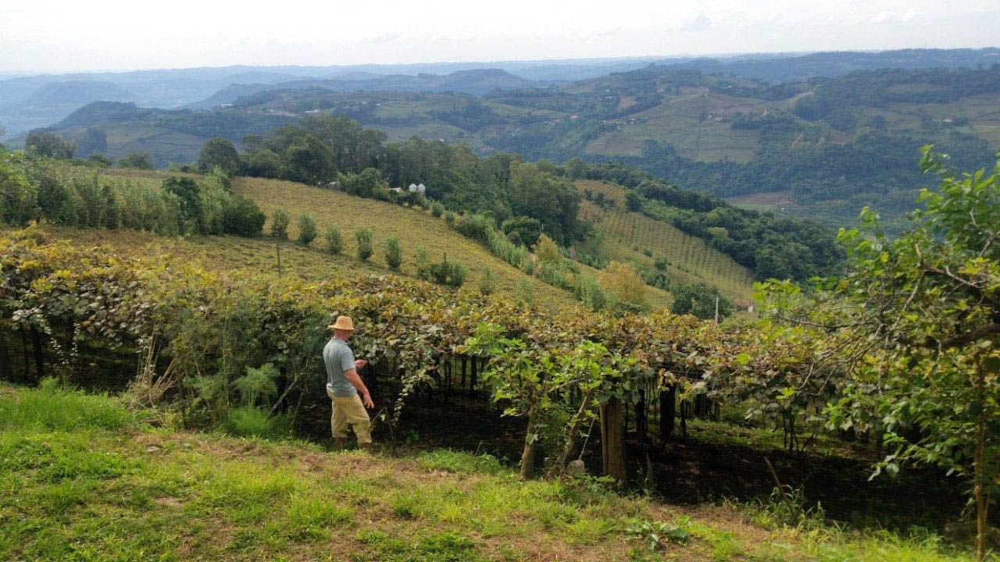

Ponto de equilíbrio
e cenários

 produzirnaobasta.com.br
produzirnaobasta.com.brDos quilos de uva que você colhe, quantos são só para pagar a conta?
Quem fica com cada quilo
- 15.000 kg pagam o que sai do bolso
- 12.500 kg pagam o desgaste, a família, a terra e o capital
- 8.500 kg sobram de lucro, quase um quarto
Uma quebra de 10% leva 42% do lucro.
Duas perguntas, duas contas
Quanto preciso colher?
custo por hectare ÷ preço
a produtividade mínima
Por quanto preciso vender?
custo ÷ produção
o preço mínimo
Custo total de R$ 110 mil, uva a R$ 4,00: cerca de 9.167 kg/ha pagam tudo. O esperado é 12.000.
Três custos, três fronteiras
| sobre o que sai do bolso | abaixo dela, cada unidade piora o caixa: o alarme |
| sobre o desgaste e a família | abaixo dela, a atividade vive de consumir o que tem |
| sobre o custo total | abaixo dela, deixa riqueza na mesa: a régua da viabilidade |
Quanta folga o projeto tem?
Da folga à decisão
folga de 10%: se justifica; de 40%: é escolha
mínimo bem abaixo do mercado: dá para escalonar
folga pequena em área grande: às vezes, produzir menos
Produzir mais nem sempre resolve
Três versões do futuro
produção −15 a −20%, preço −10 a −15%, custo +5 a +10%
sobrevive-se ao pior provável?
médias históricas, preço atual, orçamento
qual o resultado esperado?
produção +10 a +15%, preço em alta
qual o potencial?
Entre −R$ 9 mil e +R$ 59 mil
A folga de 23,6% some no ano do granizo. Mas a margem bruta continua positiva: as contas do ano são pagas.
O que o pessimista diz
| o pessimista já é viável | baixo risco: avançar |
| prejuízo moderado | atenção: seguro, tela, venda antecipada, escala menor |
| seria catastrófico | repensar: escala ou margem incompatíveis com o risco da região |
| só o otimista fecha | é aposta, não investimento |
"E se o preço cair 10%?"
A resposta sai do cenário pessimista: com número, não com "acho que sim".
Referências
KAY, R. D.; EDWARDS, W. M.; DUFFY, P. A. Gestão de propriedades rurais. 7. ed. Porto Alegre: AMGH, 2014.
OLIVEIRA, R. M. Gestão de Custos e Projetos Agropecuários: equilíbrio e cenários. · Gestão da Propriedade Rural, módulo 5. Produzir Não Basta, 2026.
Fotos: parreiral, Daniel Isaia/Agência Brasil (CC BY 3.0 BR).
Material elaborado pelo Prof. Róberson Macedo de Oliveira (Colégio Politécnico da UFSM), com apoio de IA (Claude, Anthropic) na organização didática e na diagramação; conteúdo, seleção e decisões de ensino são do docente.